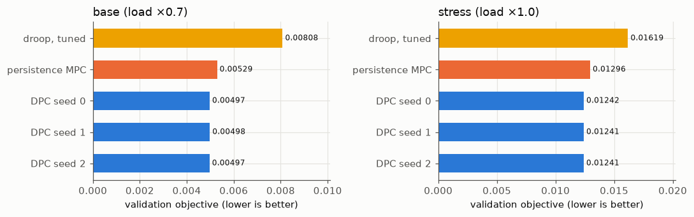

05 Online MPC baseline#
The MPC solves, at every 5-minute step, a convex problem over 144 steps with the same eq. (16) terms and weights as DPC and the same terminal dead-zone term. It uses the same information as DPC (a persistence forecast: current load and PV held over the horizon). Its first action passes through the same safety layer, and the plant is the same nonlinear DistFlow simulation.
Differences from the proposal, which apply to every MPC number on this site:
The MPC uses a convex LinDistFlow model, not the non-convex AC OPF named in the proposal.
Its voltage limits are soft (squared slack, weight 1000), as in the DPC loss.
Its SoC model is lossless (one signed P per battery); the plant keeps a charge and discharge efficiency of 0.95.
It was not tuned: same weights as DPC, nothing chosen on validation.
Any speed comparison of DPC on this site is therefore against a convex MPC, not against an AC-OPF MPC.
Read these results with the following caveats
Preliminary, validation part only. The test part is sealed and has not been evaluated. Every number comes from one network (IEEE 33-bus) and from the validation part, which was also used to select the DPC policy, so the DPC numbers are optimistically biased.
Data. Solar (Utrecht, 2014-2017) and load (Portugal, 2012-2014) are real measurements, but they come from different places and years and share no real weather. The PV size of 3.9 MW was chosen after a no-control check on the training part only (at 2.6 MW no training step exceeded 1.05 pu).
RQ2 was reworded on 2026-11-04, before any controller existed, because extreme ramps and voltage violations rarely coincide in this data (see Decisions).
Training bias. 30% of the training windows contain an extreme solar ramp.
Differences from the proposal’s eq. (16). Degradation and C-rate terms are off in every variant (“degradation off”). A terminal SoC term with a 30-70% dead zone is added and is not in eq. (16).
The safety layer goes beyond the proposal: it also limits P by the stored energy (SoC kept within 10-90%), not only by the inverter limits of eqs. (4)-(7). It does not guarantee voltage feasibility.
Active power use is marginal and not seed-robust. Voltage is regulated mostly with reactive power Q; the selected policy passes the pre-specified “P is used” threshold on 1 of 3 seeds.
The MPC baseline is a convex LinDistFlow MPC with soft voltage limits and a lossless SoC model, not the AC-OPF MPC named in the proposal, and it was not tuned. Speed comparisons are therefore against a convex MPC. The oracle MPC uses exact future data and is an upper bound, not a real controller.
Ablations. “penalty-only” includes a soft inverter-limit penalty that was added on purpose (decision D1). Variants without the safety layer can break the inverter limits; such steps are physically impossible operation and are reported as shares, not as achievable performance.
Corrections to the proposal: a discharging battery enters the net load with a minus sign, and the left side of eq. (9) is P, not 2P. Results computed before the SoC energy limit was added (2026-11-05) are superseded and not shown.
Why the SoC model is lossless (superseded pilots)#
The first MPC version modelled efficiency by splitting P into charge and discharge parts. On the two pilot days it charged and discharged at the same time, which in its own model burns stored energy. A pre-specified diagnostic and a fixed small penalty did not remove this, so the model was changed to one signed P per battery, before any comparison with DPC existed. The numbers below belong to the superseded versions and are shown only to document that change.
Source: results/m4_mpc_pilot.json, commit 5ccb3fc (private development history), code differed from that commit: False
Source: results/m4_mpc_overlap_diagnostic_rerun.json, commit 152586a (private development history), code differed from that commit: False
Source: results/m4_mpc_pilot_penalty.json, commit 36decdd (private development history), code differed from that commit: False
| regime | simultaneous charge+discharge, first pilot | mean overlap (MW), diagnostic | mean overlap (MW), with penalty |
|---|---|---|---|
| base (load ×0.7) | 30.7% | 0.129 | 0.131 |
| stress (load ×1.0) | 23.9% | 0.096 | 0.098 |
Lossless pilot: pre-specified pass criteria#
Source: results/m4_mpc_pilot_lossless.json, commit 2c70d3f (private development history), code differed from that commit: False
| regime | steps | optimal (≥ 99.9%) | no charge/discharge split | max one-step SoC mismatch (fail above 0.0044) | safety layer changed the action |
|---|---|---|---|---|---|
| base (load ×0.7) | 576 | 100.0% | yes | 1.04e-04 | 0.00% |
| stress (load ×1.0) | 576 | 100.0% | yes | 1.07e-04 | 0.00% |
All criteria pass: yes.
Full validation run: persistence MPC next to DPC and the droops#
All controllers below run on exactly the same validation steps, in the continuous loop with 15 solver sweeps. DPC: median and range over seeds 0, 1 and 2.
Source: results/m4_mpc_full/ (same commit as the lossless pilot), commit 2c70d3f (private development history), code differed from that commit: False
| objective | VVR | V-RMSE (pu) | losses (kW) | mean |P| (MW) | mean |Q| (Mvar) | ||
|---|---|---|---|---|---|---|---|
| regime | controller | ||||||
| base (load ×0.7) | no battery action | 0.01526 | 1.342% | 0.01918 | 29.3 | 0.0000 | 0.000 |
| droop, original | 0.01022 | 0.000% | 0.01523 | 25.5 | 0.0000 | 0.116 | |
| droop, tuned (final) | 0.00808 | 0.000% | — | 27.1 | — | 0.232 | |
| persistence MPC | 0.00529 | 0.000% | 0.00838 | 29.4 | 0.0084 | 0.395 | |
| DPC, seeds 0/1/2 | 0.00497 [0.00497-0.00498] | 0.000% [0.000%-0.000%] | 0.00809 [0.00803-0.00811] | 27.8 [27.8-28.1] | 0.0251 [0.0250-0.0252] | 0.400 [0.400-0.404] | |
| stress (load ×1.0) | no battery action | 0.23183 | 26.312% | 0.02834 | 55.9 | 0.0000 | 0.000 |
| droop, original | 0.01993 | 0.384% | 0.02167 | 44.0 | 0.0000 | 0.199 | |
| droop, tuned (final) | 0.01619 | 0.056% | — | 44.3 | — | 0.325 | |
| persistence MPC | 0.01296 | 0.039% | 0.01599 | 44.8 | 0.0067 | 0.462 | |
| DPC, seeds 0/1/2 | 0.01241 [0.01241-0.01242] | 0.000% [0.000%-0.000%] | 0.01562 [0.01561-0.01563] | 43.1 [43.1-43.2] | 0.0253 [0.0250-0.0256] | 0.462 [0.461-0.463] |
— means the value is not stored in that record.
On the validation objective, DPC (median over seeds) is 6.0% lower than the persistence MPC in the base (load ×0.7) regime (0.00497 against 0.00529) and 4.2% lower than the persistence MPC in the stress (load ×1.0) regime (0.01241 against 0.01296). This is a validation result: the DPC variant and its seeds were chosen on the validation part, while the MPC was not tuned.
The persistence forecast holds the current load and PV constant for 12 hours, which is a crude forecast; a better forecast would probably improve the MPC. The oracle MPC on page 06 shows the upper bound.

No battery action and the original droop are left out of the chart because their objectives are much larger; they are in the table above.
MPC solver statistics (full run)#
| regime | steps | solver statuses | solve time median / p95 / max (s) | safety layer changed the action | end-of-day SoC |
|---|---|---|---|---|---|
| base (load ×0.7) | 48217 | optimal: 48217 | 0.365 / 0.901 / 11.83 | 0.00% | 0.30 - 0.47 |
| stress (load ×1.0) | 48217 | optimal: 48217 | 0.343 / 0.404 / 5.03 | 0.00% | 0.30 - 0.46 |
A latency study of DPC against MPC at different horizons and network sizes has not been done yet.